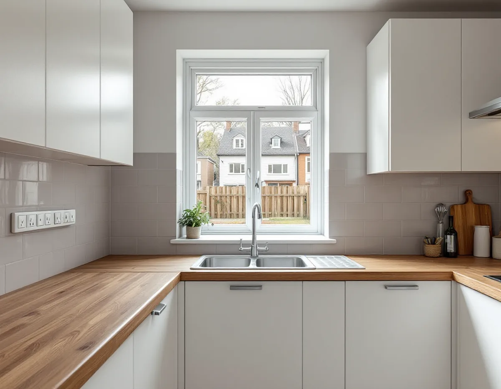
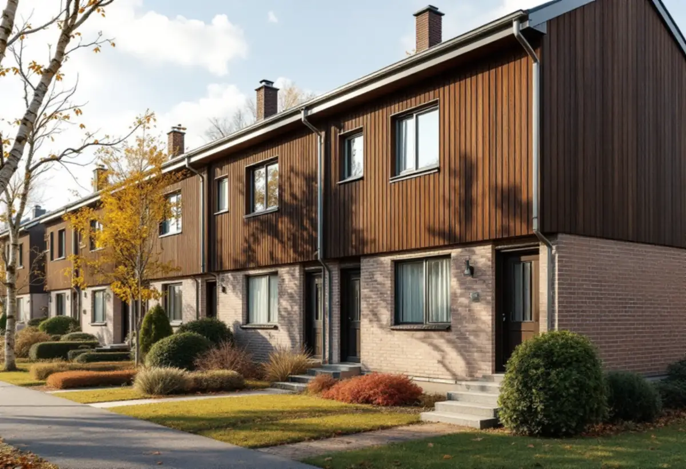

Platsbesök
Vi går igenom kök, stam, frånluft och el och tar reda på om huset är en bostadsrätt eller en äganderätt.
I Kista och Akalla är hundratals småhus upplåtna med bostadsrätt. Ett småhus i en förening ser ut som ett eget hus, men det är föreningens, och styrelsen ska godkänna det mesta som rör ledningar, ventilation och väggar. Geal Entreprenad AB bygger om kök i radhus, lägenheter och villor i Kista med omnejd, med gratis platsbesök, skriftligt kostnadsförslag och ROT-avdraget direkt på fakturan.

Kista ligger på det gamla militära övningsområdet Järvafältet. Enligt Stadsmuseets Stockholms Spår köpte staden marken 1966, och stadsdelen byggdes ut 1975–1980 med betydligt friare arkitektoniska former än i de övriga stadsdelarna på Järvafältet. Bebyggelsen beskrivs där som 2 500 lägenheter i flerbostadshus och omkring 780 småhus, och Kista centrum invigdes 1977.
Stadens områdesfakta för 2025 visar att 404 av småhusbostäderna i Kista är bostadsrätter och 482 äganderätter. I grannstadsdelen Akalla är 493 småhusbostäder bostadsrätter och 170 äganderätter. Antalet lägenheter i Kistas flerbostadshus ökade samtidigt från 4 879 till 5 318 mellan 2024 och 2025.
För köket gör det stor skillnad vilken av grupperna du tillhör. Äger du huset bestämmer du själv inom lagens krav. Är huset upplåtet med bostadsrätt gäller i stort sett samma regler som för en lägenhet i ett flerbostadshus. Husen från utbyggnaden 1975–1980 är dessutom byggda före 1982, då asbest enligt Boverket förbjöds inom byggsektorn, så misstänkta material provas innan något rivs.

Bostadsrättslagen räknar upp de åtgärder i lägenheten som kräver styrelsens tillstånd: ingrepp i en bärande konstruktion, installation eller ändring av ledningar för avlopp, värme, gas eller vatten, installation eller ändring av ventilationen, ändringar som påverkar brandskyddet och andra väsentliga förändringar. Det gäller även när lägenheten är ett småhus.
Ansvaret för skicket följer av samma lag. Du ska hålla lägenheten i gott skick på egen bekostnad, om inte stadgarna säger något annat, men svarar inte för reparationer av ledningar för avlopp, värme, gas, el och vatten som föreningen har dragit och som tjänar fler än en lägenhet. Det kan göra stor skillnad i en husgrupp där stammar och kanaler kan vara gemensamma för flera hus.
En punkt är lätt att missa. Vid en brand- eller vattenledningsskada svarar du bland annat om skadan har uppkommit genom vårdslöshet eller försummelse av någon som utför arbete i lägenheten för din räkning. Därför beskriver vi i underlaget till styrelsen vem som gör el och VVS och hur arbetet utförs, och du får handlingar att spara efteråt.
Enligt Elsäkerhetsverket ska de flesta elinstallationsarbeten utföras av ett registrerat elinstallationsföretag. Vid förändringar i den fasta installationen, till exempel ett nytt uttag i köket eller elledningar i väggarna, ska ett sådant företag anlitas. Att byta ett ojordat vägguttag mot ett jordat får du inte heller göra själv.
Det du själv får göra är begränsat: byta trasiga proppar, byta glödlampor och lamphållare, byta en fast ansluten armatur i torra utrymmen och byta en befintlig strömbrytare eller ett befintligt vägguttag för högst 16 A som sitter i egen dosa. Det förutsätter att du vet hur det görs och att arbetet kan kontrolleras.
Får det nya köket fler maskiner och uttag än det gamla går vi igenom uttag och grupper vid platsbesöket och låter elföretaget bedöma vad som behöver kompletteras innan skåp och stänkskydd monteras.
Stockholms stad kräver inget bygglov för att flytta ett kök. En anmälan och ett startbesked behövs däremot om flytten påverkar bärande konstruktion eller brandskydd, innebär en väsentlig ändring av ventilationen eller kräver en ny VA-stam i ett nytt schakt. Staden råder dig att tidigt rådgöra med sotaren om en ny eller ändrad imkanal och att kontakta styrelsen innan du börjar planera.
Har huset två plan kan en ny plats för diskbänken hamna långt från stammen. Ju längre avloppet ska dras, desto mer golv eller bjälklag behöver öppnas, och det är också en ändring av ledningar som styrelsen ska godkänna. Mer om husens tak finns hos takläggare i Kista, och om köksplanering i stort på sidan om köksrenovering.
Vi går igenom kök, stam, frånluft och el och tar reda på om huset är en bostadsrätt eller en äganderätt.
I en förening får du en beskrivning av arbetet och av vilka som utför el och VVS.
Rivning, el, VVS och montering redovisas var för sig, med arbete skilt från material.
Gamla skåp tas bort och el, rör och fläkt dras enligt den nya planen.
Stomme, bänkskiva och vitvaror monteras och ansluts.
Vi provar allt, går igenom köket med dig och lämnar handlingar att spara.
Skatteverket skriver att du i en bostadsrätt bara kan få rotavdrag för arbeten inne i din bostad, och att det inte ges för arbete på till exempel fasad eller balkong, ens om bostadsrätten är ett radhus eller parhus. Innanför väggar, tak och golv räknas bland annat att montera fast köksinredning och installera vitvaror i samband med byggarbetet, att dra elledningar från proppskåpet ut i bostaden och att installera blandare och kranar.
Avdraget är 30 procent av arbetskostnaden, högst 50 000 kr per person och år och högst 75 000 kr tillsammans med rutavdrag. Äger du huset gäller reglerna för småhus. Material och resor ger inget avdrag, och Geal drar avdraget direkt på fakturan.
Det som styr mest är om diskbänk och spis står kvar vid stam och kanal eller flyttas. Behöver elen kompletteras med nya grupper tillkommer elarbete, och i ett hus i två plan kan ett nytt avlopp kräva att golv öppnas. Efter ett gratis platsbesök får du ett skriftligt kostnadsförslag.
Planering, el, VVS, fläkt och väggar.
Köksrenovering i Stockholm →Takbyte, takbesiktning och plåtarbeten.
Takläggare i Kista →Radhusen, föreningen och ventilationen.
Badrumsrenovering i Kista →Uterum, altan och föreningens tillstånd.
Byggföretag i Kista →Radhus, atriumhus och husgruppen.
Fasadmålning i Kista →1970-talets radhusfönster.
Fönsterrenovering i Kista →Golvslipning i bostadsrätt, hyresrätt och radhus.
Golvslipning i Kista →1970-talets hus, asbest och ROT.
Målare i Kista →Garderober, väggar och dörrar i lägenheten.
Snickare i Kista →Platta tak och pulpettak.
Takbyte i Kista →